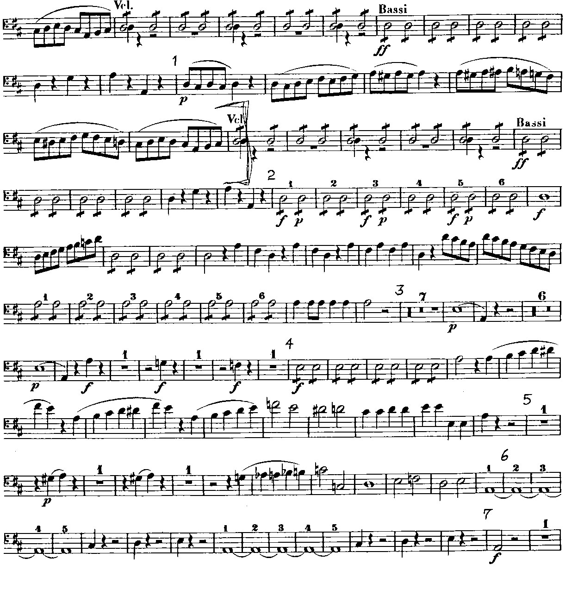
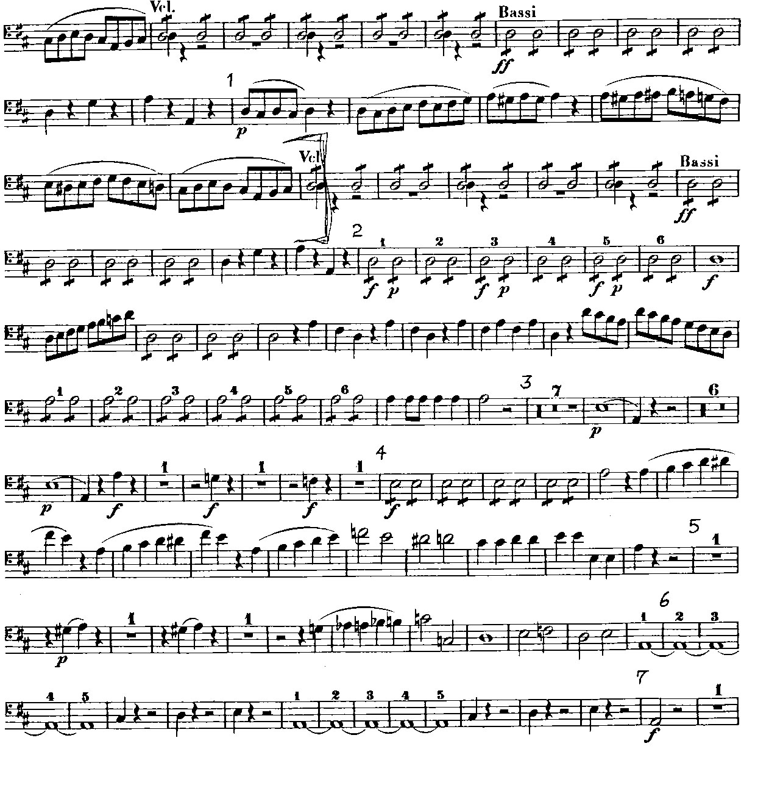

Art 321 Week 3

The threshold level used in this image of the cat was set at 91. Going any lower on the threshold level would increase the black used in the images, whereas going higher in threshold value increased the white used. I chose 91 as a good threshold point as it was able to show the outline of the cat's face and body, without having too much of the background distract that aspect.
With this image above, the threshold level I used was set at 125. There is not a "best" threshold value for this image as going any lower in threshold value would increase the white used in the image. The increase of white removed the edges of the writing in black and since it is cursive writing, it is necessary to ensure that it is as legible as possible since everyone has their own unique way of writing, with some hard to read, and others, not so much. On the other hand, increasing the threshold level increases the black around the edges of the paper. This overlaps with the black used for the writing, which interferes with the cursive writing.

 

In this enhanced image of sheet music, I had sharpened the edges of the music and changed the threshold a little touch. There does not seem to be any issues within this sheet, and making the changes did not cause any difference. What I also did was invert the image of the sheet music, shown below, in order to try and identify any errors and make sure that each note is legible, which had helped my work.